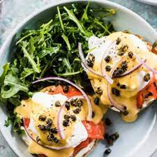

Smoked Salmon Eggs Benedict

Description
Smoked salmon eggs benedict is one of the most absolutely delicious foods on Earth. Tasty, healthy, and filling, this meal can
be enjoyed at any time of day, not just brunch! While not a particularly difficult dish to master, you will have to juggle several tasks at once
if you want to serve it nice and toasty warm, as it was meant to be.
An English muffin toasted golden, cream cheese, and smoked salmon topped with a glossy Hollandaise sauce serves as the foundation, while
shredded dill and capers provide the finishing touches. Read on to learn how to make this family favourite, and have a benny good day!
Recipe Source: The Endless Meal, Recipe Site
Ingredients
- 4 large eggs
- 2 English muffins, cut in half
- 4 tablespoons cream cheese
- 3 ounces smoked salmon, salmon lox
- 2 teaspoons capers
- 2 tablespoons shredded dill
- A pinch of black pepper
Lemony Hollandaise Sauce
- 2 large egg yolks
- 2 tablespoons water
- 2 tablespoons butter
- 2 teaspoons fresh lemon juice
- A pinch of sea salt
Steps
- Add egg yolks and water to a small frying pan and hold 2 inches above a medium-high element. Whisk the eggs until they are fronthy and warm.
Add the butter to the pan and whisk until the hollandaise is thick. Whisk in the lemon juice and a pinch of salt and set the pan aside.
- Heat a medium-sized pot of water on high.
- Toast the muffins and spread cream cheese on top. Divide the smoked salmon between them.
- Once boiling, reduce the water heat so that it gently simmers. Crack the eggs one at a time and cook for 4 minutes. Remove using a slotted
spoon and place one on each muffin.
- Pour the hollandaise over the eggs and top with capers and pepper.